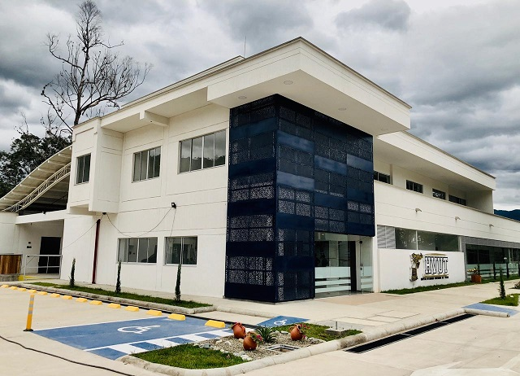
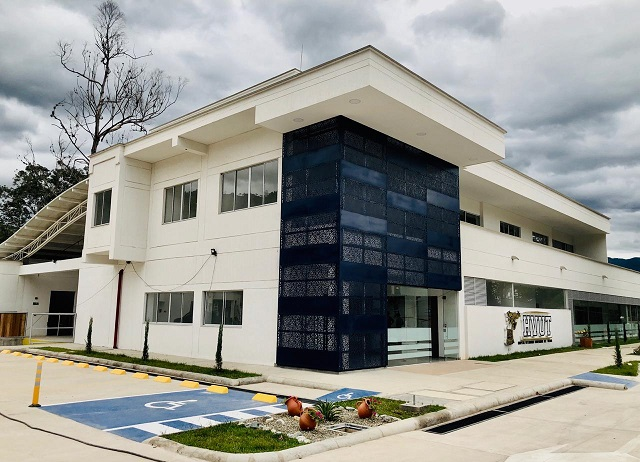

Nuestra empresa se dedica a cuidar, consentir y entrenar a tus mascotas ya que ellos se merecen lo mejor, tenemos muchos servicios que ofrecer: veterinaria, hotel y entrenamiento para perros y gatos, nuestros integrantes estan capacitados para cuidar, consentir y respetar a tu mascota como ellos se lo merecen. tambien ofrecemos instalaciones de calidad donde ellos y ustedes puedan sentirse comodos y sabiendo que estan en buenas manos, nuestras instalaciones fueron hechas por los mejores arquitectos del pais asi que es un lugar seguro y accesible para cualquier persona y animal.
 

Nuestro fundador el Ingeniero Sergio Emmanuel Izeppi Valle decidio crear esta empresa ya que es amante de los animales y le gusta cuidarlos y pasar tiempo con ellos sus mascotas fueron la inspiracion de el para hacerlo ya que el se dio cuenta que muchos lugares lo unico que hacen es sacarle dinero a las personas, a el solo le importa que los animales sean felices y la mayor parte de las ganancias va para nuestro refugio que cuida y rescata animales maltratados y abandonados en las calles.